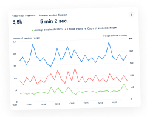

<section class="p-[10px]">
  <div class="container mx-auto bg-[#e2f2ff] rounded-[10px] px-[10px] py-[20px]">
    <h1 class="font-roboto font-semibold text-[32px] mb-5 leading-tight tracking-wide ">How to do a Website Audit to
      Improve SEO & Conversions</h1>
    <div class="font-roboto text-xs">
      <p class="text-textPrimary mb-[10px]">
        Usability auditing with the Plerdy tool is a comprehensive expert
        assessment of your website based on a profound study of user behavior
        registered on it. Plerdy will provide you with crucial data based on which
        you will be able to run an efficient usability audit of your website,
        identify and fix SEO issues, and subsequently lead it to higher positions
        in search.
      </p>
      <p class="text-textSecondary mb-5 text-xs">
        Thus, you'll compile a list of flaws in your website interface,
        navigation, and conversion path that can eventually affect its micro and
        macro conversion rates.
      </p>
    </div>
    <button type="button" class="block text-white bg-[#5d78ff] py-[10px] px-[30px] rounded-lg mx-auto mb-5"
      data-modal-open>Run the Plerdy tool</button>
    <h2 class="font-roboto font-normal text-textPrimary mb-[10px] text-center">Trusted by some of the world's largest
      enterprises
    </h2>
    <ul class="flex flex-wrap gap-5 items-center justify-evenly mb-5">
      <li></li>
      <li></li>
      <li></li>
      <li></li>
      <li></li>
    </ul>
    <ul class="w-[229px] h-[273px] rounded-xl mx-auto relative bg-cover bg-no-repeat bg-center"
      style="background-image: url('../img/hero/hero-mobile.jpg'); ">
      <li class="w-[117px] h-[93px] absolute -top-5 -left-5 bg-[#F1F7FFE6] rounded-[6px] !-rotate-6 " data-aos="zoom-in">
        
      </li>
      <li class="w-[101px] h-[54px] absolute top-11 -right-7 bg-[#F1F7FFE6] rounded-[6px] !rotate-6" data-aos="zoom-in">
        
      </li>
      <li class="w-[102px] h-[55px] absolute bottom-5 -left-7 bg-[#F1F7FFE6] rounded-[6px] !-rotate-6" data-aos="zoom-in">
        
      </li>
    </ul>
  </div>
</section>